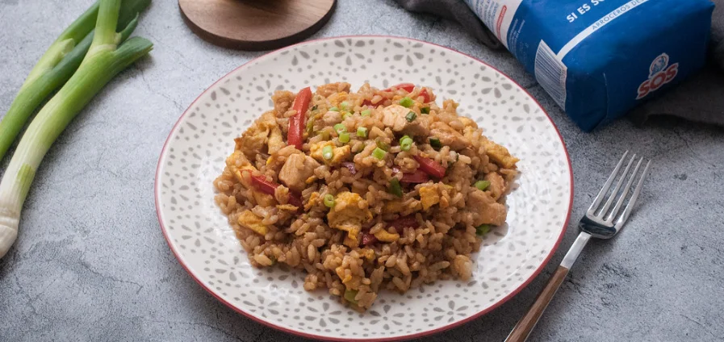

Arroz chaufa

Description
El arroz chaufa es un plato clásico peruano, nacido de la fusion de la comida tradicional criolla peruana y la comida china, traída por inmigrantes asiáticos
La preparación de este plato es bastante sencilla, sin embargo el resultado es espectacular. Conoce uno de los platos más consumidos en la gastronomía peruana.
Ingredients
- 300 g. de arroz redondo SOS
- 1 pechuga de pollo
- 1 salchicha fresca (opcional)
- ½ pimiento rojo
- 4 huevos
- 4 cebollitas chinas
- 1 cdita. jengibre rallado
- Aceite de girasol
- 1 cda. aceite de sésamo
- 125 ml. salsa de soja
Steps
- Lavamos y troceamos el resto de ingredientes para tenerlos listos a la hora de ir añadiéndolos al wok. Limpiamos el pollo de posibles restos de grasa y lo troceamos en daditos.
- Lavamos y troceamos el pimiento rojo y la cebollita china. Pelamos y rallamos el jengibre y lo reservamos. Batimos los huevos en un bol y en un wok o, en su defecto, una sartén. Calentamos dos cucharadas de aceite de girasol. Cuando esté bien caliente hacemos una tortilla con los huevos. Retiramos la tortilla, la troceamos y reservamos.
- Añadimos dos cucharadas más de aceite de girasol. Una vez que esté bien caliente, agregamos el jengibre rallado y el pollo troceado. Si queréis añadir trozos de salchicha fresca le va también genial. En muchas zonas de Perú, encontraréis este arroz con salchichas.
- Freímos la carne hasta que vemos que comienza a dorarse. Retiramos y reservamos.
- Agregamos algo más de aceite de girasol, si vemos que es necesario y las 2 cucharadas de aceite de sésamo. Cuando el aceite vuelva a estar caliente. Incorporamos el pimiento troceado y las cebollitas chinas.
- Sofreímos a fuego fuerte, sin parar de remover, hasta que vemos que la verdura comienza a tostarse. Nos quedará al dente, más bien durita. Incorporamos el pollo y el arroz que tenemos reservado y salsa de soja. Sin parar de remover cocinamos el el wok bien caliente para que se integren los sabores.
- Cómo la salsa de soja incluye un gran aporte de sal, hasta este punto no añadiremos ninguna. Una vez que los ingredientes hayan tomado la salsa de soja, probamos para ver si hace falta añadir alguna más.
- Acabamos añadiendo la tortilla e integrándola con el resto de ingredientes. Servimos el arroz chaufa bien caliente en el momento.
- Se trata de un plato muy completo que perfectamente puede pasar cómo plato único. Perfecto para una comida o incluso una cena. Se trata de un clásico de la cocina peruana que vale la pena preparar en casa, toda una receta de rechupete.